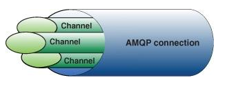

RabbitMQ
Introduction
April 30, 2014
Created by Jonathan Bouzekri / Smile - Open Source Solution
Plan
- History
- Concepts
- Examples
Plan
-
History
- Dates
- Standardization
- Solutions
- Concepts
- Examples
Dates
Why wasn't there a common software "bus" ?
- Vivek Ranadiv
- 1983 : Teknekron : just the concept
- 1985 : PublishSubscribe (PubSub) and TIB Teknekron's The Information Bus (TIB)
- 1993 : IBM MQSeries
- 1997 : Microsoft Message Queue (MSMQ)
- 2002 : IBM WebSphere MQ (rebranded)
Why didn’t MQ find a larger audience ? VENDOR LOCK-IN !
Standardization
- 2001 : Java Message Service (JMS)
- 2004 : start of Advanced Message Queuing Protocol (AMQP)
- 2006 : Rabbit Technologies
- 2006 : First public draft of the AMQP specification
Solutions
Other open source solutions :
- ActiveMQ
- ZeroMQ
- Apache Qpid
Other open source solutions :
- It implements AMQP and was the first one to do so
- Easy clustering installation thanks to Erlang
- Easy to install, easy to use
- (More reliable and crash resistant than the competition)
Plan
- History
-
Concepts
- Messaging
- AMQP
- Examples
Publisher and Consumer
Publisher
- Create message ...
- ... label the message (for routing) ...
- ... and send it to the broker server (RabbitMQ)
Publisher
- Attach itself to a broker ...
- ... and subscribe to a queue
Channel
- Publisher or consumer connect to the broker via TCP.
- It creates an AMQP channel
- AMQP commands are issued over the channel
Avantage : Many publisher or consumer over the same TCP connection.
Queue
- A simple NAMED mailbox "living" in RabbitMQ
- It works as a FIFO
- Infinite buffer
- Messages can only be stored in a queue. Message end up in a queue when waiting to be consumed.
- Many publisher can write message going in a queue and many consumers can try to receive them by reading from the queue
Exchange and binding
Exchange :
- Publisher sends message to the broker through the exchange
Binding :
- An exchange binds to a queue and provides a routing key
A message send to the broker has a routing key. The broker placed it in the right queue according to the binding and the routing key.
Point of View
Press ESC to enter the slide overview.
Hold down alt and click on any element to zoom in on it using zoom.js. Alt + click anywhere to zoom back out.
Works in Mobile Safari
Try it out! You can swipe through the slides and pinch your way to the overview.
Marvelous Unordered List
- No order here
- Or here
- Or here
- Or here
Fantastic Ordered List
- One is smaller than...
- Two is smaller than...
- Three!
Transition Styles
You can select from different transitions, like:
Cube -
Page -
Concave -
Zoom -
Linear -
Fade -
None -
Default
Themes
Reveal.js comes with a few themes built in:
Default -
Sky -
Beige -
Simple -
Serif -
Night
Moon -
Solarized
* Theme demos are loaded after the presentation which leads to flicker. In production you should load your theme in the <head> using a <link>.
Global State
Set data-state="something" on a slide and "something"
will be added as a class to the document element when the slide is open. This lets you
apply broader style changes, like switching the background.
Custom Events
Additionally custom events can be triggered on a per slide basis by binding to the data-state name.
Reveal.addEventListener( 'customevent', function() {
console.log( '"customevent" has fired' );
} );
Slide Backgrounds
Set data-background="#007777" on a slide to change the full page background to the given color. All CSS color formats are supported.
Image Backgrounds
<section data-background="image.png">Repeated Image Backgrounds
<section data-background="image.png" data-background-repeat="repeat" data-background-size="100px">Background Transitions
Pass reveal.js the backgroundTransition: 'slide' config argument to make backgrounds slide rather than fade.
Background Transition Override
You can override background transitions per slide by using data-background-transition="slide".
Clever Quotes
These guys come in two forms, inline:
“The nice thing about standards is that there are so many to choose from”
and block:
“For years there has been a theory that millions of monkeys typing at random on millions of typewriters would reproduce the entire works of Shakespeare. The Internet has proven this theory to be untrue.”
Pretty Code
function linkify( selector ) {
if( supports3DTransforms ) {
var nodes = document.querySelectorAll( selector );
for( var i = 0, len = nodes.length; i < len; i++ ) {
var node = nodes[i];
if( !node.className ) {
node.className += ' roll';
}
}
}
}
Courtesy of highlight.js.
Intergalactic Interconnections
You can link between slides internally, like this.
Fragmented Views
Hit the next arrow...
... to step through ...
any type- of view
- fragments
Fragment Styles
There's a few styles of fragments, like:
grow
shrink
roll-in
fade-out
highlight-red
highlight-green
highlight-blue
current-visible
highlight-current-blue
Spectacular image!

Export to PDF
Presentations can be exported to PDF, below is an example that's been uploaded to SlideShare.
Take a Moment
Press b or period on your keyboard to enter the 'paused' mode. This mode is helpful when you want to take distracting slides off the screen during a presentation.